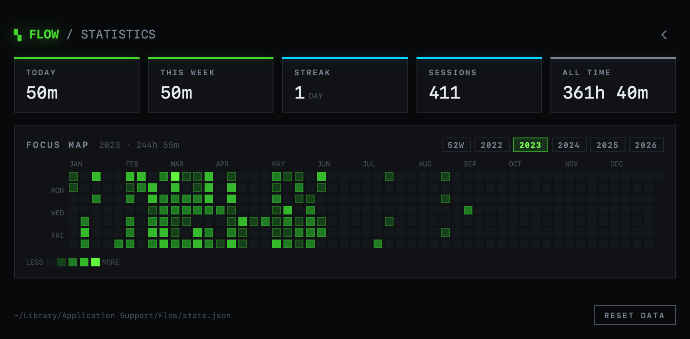
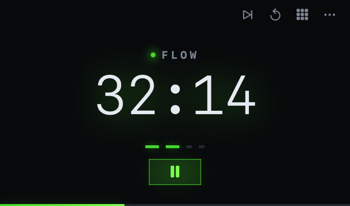
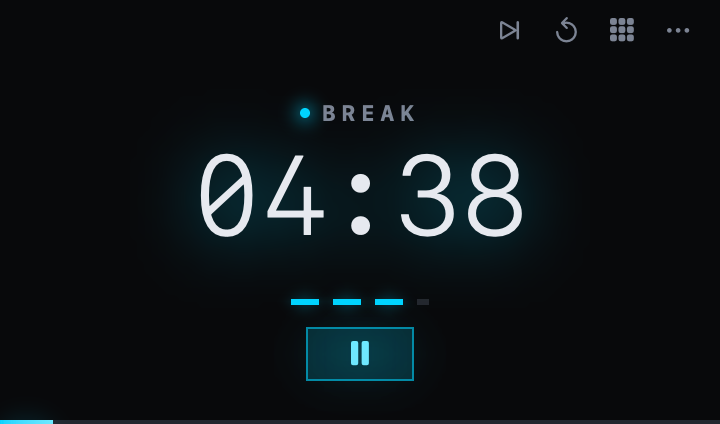

ƒ FLOW
A minimalist work tracker / pomodoro timer for macOS. Lives in the menu bar, counts down flow and break phases, and records every focused minute into a heatmap.
DOWNLOAD FOR MAC`· macOS 13+
- Open the DMG and drag Flow to Applications.
- The build is ad-hoc signed, so the first launch is blocked. Right-click Flow → Open → Open. Once only.
- Left-click the menu bar mark to show the timer, right-click to start or pause, Control-click for the menu.


